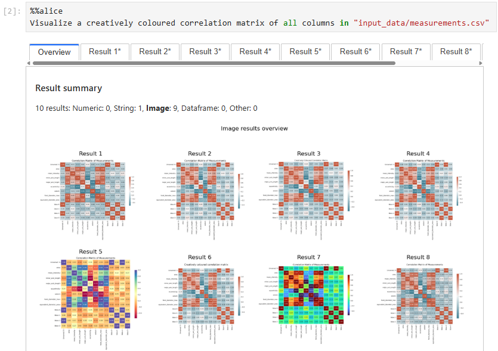
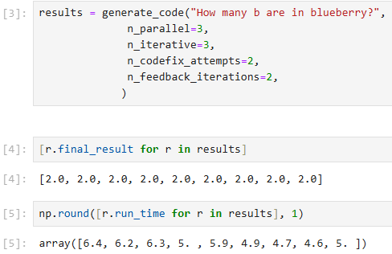
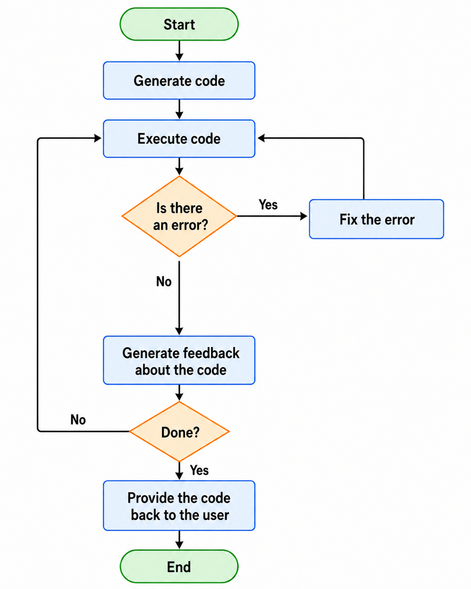
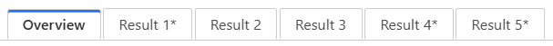
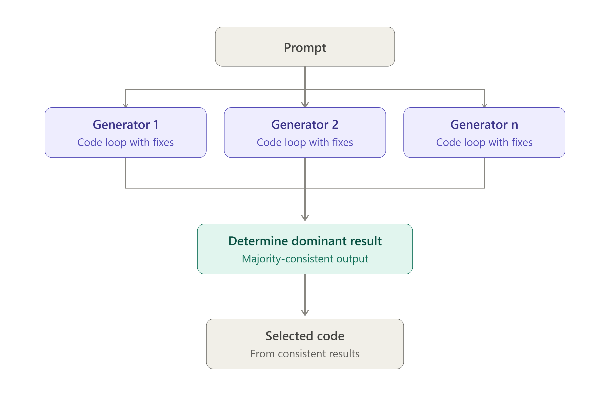
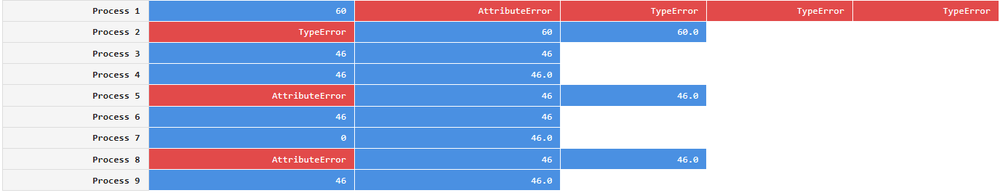
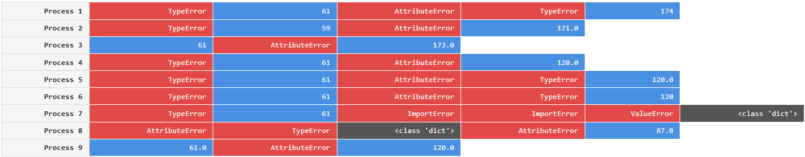
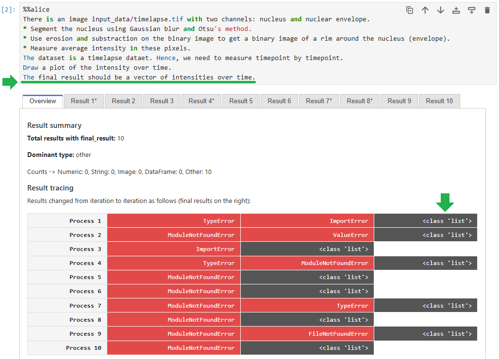

%%alice & sand-bob#

Sand-Bob is a tool for LLM-based code generation and docker-sandboxed execution in Jupyter Lab and interactive rendering in Jupyter Book. It also is a framework for studying language models and prompt-engineering performance in the context of single-script code generation for data analysis.
Note: This is research software under active development. The API may break with every new release.
%%alice magic command#
With minimal boilerplate code, you can ask %%alice to generate code for you. If it’s good, you can save it as a Jupyter notebook afterwards.

generate_code to handle AI-generated code and execution results as variables#
Using the sand_bob.generate_code function, you can do pretty much the same, but hold generated code, result values and execution times as variables after code-generation.

Basic programmatic usage#
When starting to work with Sand-Bob, you first need to configure a Language Model Server. You can do this by specifying the environment variables SANDBOB_LLM_SERVER and SANDBOB_LLM_API_KEY, or alternatively using python at the beginning of your notebook:
from sand_bob import config_llms
config_llms(model="gemma3:4b",
base_url="http://localhost:11434/v1",
api_key="none"
)
When using %%alice you also need to configure the environment where the AI-generated code can be executed and which folder it will have [read] access to.
from sand_bob import initialize
initialize(input_host_path="input_data/",
n_parallel=1,
n_iterative=1,
n_codefix_attempts=2,
n_feedback_iterations=1,
dependencies=["numpy", "matplotlib", "pandas", "scikit-image", "seaborn", "stackview", "scipy"])
You can then prompt for data analysis code like this:
%%alice
There is an image input_data/blobs.tif
I would like to segment the bright blobs in the image and count them.
The result should be the number of blobs
Or alternatively both steps above in one shot:
from sand_bob import generate_code
results = generate_code("""
There is an image input_data/blobs.tif
I would like to segment the bright blobs in the image and count them.
The result should be the number of blobs
""",
input_host_path="input_data/",
dependencies=["numpy", "matplotlib", "pandas", "scikit-image", "seaborn", "stackview", "scipy"],
n_parallel=2,
n_iterative=3,
n_feedback_iterations=1,
n_codefix_attempts=1)
Note that in your prompt, you need to specify the final result format you expect. Otherwise it will be hard later to decide which of multiple generated code samples do the right job.
Parameters#
model: A large language model (LLM) capable of code-generation. When using Ollama, you should install it first and download the model.vision_model: A vision language model (VLM) that can interpret plots and data visualizations used for generating feedback about code and resulting data visualizations. If you do not have access to any VLM, you need to specifyn_feedback_iterations=0.input_host_path: This folder location will be accessible to the Docker container where the code will be executed. It is recommended for now to make a subfolder named “input_data” and put the data you want to work with in this folder. Later in the prompt, you can mention this folder “input_data” to point the AI at specific files.n_parallelandn_iterative: Code generation can be done multiple times in parallel and iteratively, e.g. if you specifyn_parallel=2andn_iterative=3, two threads will start a Docker container each, run and optimize code. They will do it both 3 times each. By the end you will receive 6 code samples that attempt to solve your data analysis task, together with corresponding results.n_codefix_attempts: If there was an error after code was generated and executed, the AI will attempt to fix this error multiple times as specified. E.g. ifn_codefix_attempts=2, code will be executed 1 time in the best case and 3 times in the worst case. Code fixing also includes potentially updating the list of dependencies. Only libraries listed insand_bob.WHITELIST_DEPENDENCIES. You can also modify this list to your needs before executing code generation.n_feedback_iterations: After potential code-fixes, the code and corresponding result visualizations will be provided to a VLM to check it. This VLM will potentially come up with code improvements. Improved code will then be fed back to code-fixing if necessary. If the code remains identical, e.g. because feedback suggested so, it will stop early. Hence, if you specifyn_codefix_attempts=2andn_feedback_iterations=2, code will be executed 1 time in the best case and 9 times in the worst case.
This figure explains how n_codefix_attempts and n_feedback_iterations work together:

Code generation relying on result consistency#
When generating multiple code samples, it is obviously possible to compare their execution results. If the results of n runs are inconsistent with each other (i.e. not equal), it is obvious that at least n-1 results are wrong. Hence,
consistency is a necessary but insufficient condition for functional correctness of code. Nevertheless, consistency is an indicator. Hence, we can generate multiple code samples, execute them and see if multiple code samples lead to the same, dominant result. For picking the code to work on further, we choose a code-sample that lead to this dominant result. You can see what results were consistent / dominant in the graphical user interface. These results are marked with a *:

And you can do the dominant result selection programmatically:
results.dominant_result
This figure summarizes what is happening under the hood:

Prompting hints#
Inconsistency visualization#
During the process of code improvement, error messages and results are stored. You can visualize them to differentiate cases, where finding a solution was straightforward:

… and cases where the system struggled to solve a task:

Note that even if multiple code generations / executions return the same result, does not necessarily mean the result is correct.
Result type specification#
It is recommended to specify clearly the type of the final result that you expect from a data analysis process. Only if you phrase this clearly, the LLM can check if this condition is fulfilled and stop improving data analysis code then.

Limitations#
The Docker containers do not have access to the internet while executing code. This is an intentional security constraint and also meant to optimize execution time. If code within containers downloads the same AI model over and over this is highly inefficient and will waste resources. If you seek to download files or AI models to use them within the code-execution loop, download these models locally and give the container access to the folder where the files are stored.
So far Sand-Bob was only tested on Windows 11 with Docker Desktop and WSL2 installed.
Similar Projects#
License#
BSD-3 License
Contributing#
Contributions are welcome! Please feel free to submit a Pull Request. Note: Large parts of the code in this repository was vibe-coded using GitHub Copilot integration in Visual Studio Code. When modifying code here, consider using a similar tool.